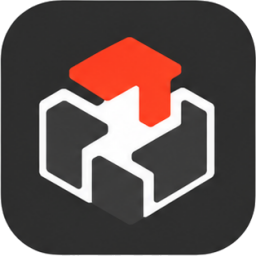

MakerCrafter
An open-source project notebook for makers.
MakerCrafter is where a project comes together before it goes to Cricut Design Space, xTool Studio, LightBurn or your slicer: ideas, reference images, fonts, colors, materials, machine settings and build steps, all in one notebook you can print.
- Any device. iPhone, iPad, Mac and PC.
- Your data, your choice. Local-first, synced through your own cloud or your own server.
- Only what you use. A small core, with add-ons for lasers, 3D printing, vinyl and more.
- An open format. Projects are shared as
.makercrafterfiles any tool can read.
MakerCrafter is in early design. Follow along on GitHub.